Setting up XlCalcNet#
Installing XlCalcNet#
Installing a version of Python which is dedicated to MS Excel and/or LibreOffice Calc#
The XlCalcNet package is compatible with Python versions 3.8 - 3.15. It is recommended to use a version of CPython which is both mature and supported. In this manual, we will use Python version 3.13.15.
Important
However, if we want to use XlCalcNet with LibreOffice (version 7.0 or later, 64 bit), we need to make sure that the version which we install is compatible with the main Python core installation of LibreOffice, which means that the first 2 numbers of the version number x.y.z must match.
To find out which version this is, follow these steps: In the folder C:\Program Files\LibreOffice\program double-click on python.exe. This opens the python console, which in the first line states which Python version is used. At the time of writing (October 2026), the most current version of LibreOffice is version 26.8, which uses Python version 3.13.15. Earlier version of LibreOffice use different versions of Python.
Python can be installed in different ways. It is recommended to install Python as a dedicated version for use with MS Excel and/or LibreOffice Calc, which does not require uninstalling any previous versions of Python, does not interfere with other Python installations, and does not require administrative privileges.
As installation folder any folder can be used for which the user has read and write access. In the following we will assume that the installation folder is C:\Python313. We assume that the path to this folder is NOT added to the PATH environment variable.
As an example of the installation process, we download the windows installer of version 3.13.15 (64 bit) from https://www.python.org/downloads/release/python-31315/. We will install this version into the folder C:\Temp, so we make sure beforehand that this folder exists and is empty.
In the Download folder, double-click on the downloaded file python-3.13.15-amd64.exe to start the installation. Click on “Customize installation”.
In the next dialog page “Optional Features” unselect “Documentation”, “Python test suite”, “py launcher” and “for all users”. Click on “Next”.
In the next dialog page “Advanced Options” unselect all items, including “Create shortcuts”. In the line below “Customize install location” enter C:\Temp. Click on Install. Once the installation has been completed, the last dialog page “Setup was successful” appears. Click on Close.
In the Windows explorer, navigate to the folder C:\Temp. Open another Windows explorer instance, navigate to C:\, and create the folder C:\Python313. Copy (DO NOT move!) the content of C:\Temp into C:\Python313.
Click the Start button and open Settings (or press Windows Key + I). Click on Apps on the left menu. Select Installed apps to view and manage all programs installed on your PC. Navigate to “Python 3.13.15 (64-bit)” and click on the ... symbol. Select Uninstall and confirm. Once Uninstall has been completed, the last dialog page “Uninstall was successful” appears. Click on Close.
Now the folder C:\Temp can be deleted. The folder C:\Python313 contains the (“freestanding”) Python version that we will work with in this manual.
First steps with XlCalcNet#
Since the path to C:\Python313 is not added to the PATH environment variable, it is convenient to prepare, within the C:\Python313 folder, batch files for the installation of the Python packages which one wishes to install and possibly update later.
The first batch file will ensure that our version of pip is up to date. Right-click over any free space in the C:\Python313 folder, select New -> Text Document. Rename this document to A1upgradepip.bat, ignoring the warning. Open this file for editing in the Windows standard editor. Type python -m pip install -U --no-warn-script-location pip as install command, begin a new line, type pause, save the file, and close the editor.
Now double-click on A1upgradepip.bat. This will update pip as needed.
In the same way prepare a batch file named A2installxlcalcnet.bat, using python -m pip install -U xlcalcnet as install command. Double-click on A2installxlcalcnet.bat. This will install the latest version of the XlCalcNet package.
To check that this installation was successful, double-click on python.exe, which will open the python console:
>>> from xlcalcnet import mpm
>>> mpm.dps = 40
>>> mpm.sqrt(2)
mpf('1.414213562373095048801688724209698078569662')
The 3 folders which are used by XlCalcNet#
XlCalcNet uses the following 3 folders:
The installation folder (in our example
C:\Python313\Lib\site-packages\xlcalcnet), which contains the program code of the package (which should not be changed by the user during normal use). This folder is automatically created during the installation of XlCalcNet.The
DataXlCalcNetfolder in the Documents folder, which contains code examples and data which are directly manipulated by the user. This folder needs to created manually by the user (see below).The
XlCalcNetIDEfolder in the AppDataLocal folder, which contains data or executable binaries which are generated as a result of running a Python script or C# program. This folder is automatically created while using XlCalcNet.
Important
It is crucial for the correct functioning of XlCalcNetThat that the DataXlCalcNet folder is located in the Documents folder. The DataXlCalcNet folder has already been downloaded during the installation of XlCalcNet; it is located in the installation folder (in our example C:\Python313\Lib\site-packages\xlcalcnet). The user needs to copy it manually from the installation folder into the Documents folder.
With the DataXlCalcNet folder in the Documents folder we are ready for the next step: installing Python.NET.
Installing and using Python.NET: Calling C# from Python#
Python.NET is a package that gives Python programmers nearly seamless integration with the .NET Common Language Runtime (CLR) and provides a powerful application scripting tool for .NET developers. It allows Python code to interact with the CLR, and may also be used to embed Python into a .NET application.
Right-click over any free space in the C:\Python313 folder, select New -> Text Document. Rename this document to A3installpythonnet.bat, ignoring the warning. Open this file for editing in the Windows standard editor. Type python -m pip install pythonnet as install command, begin a new line, type pause, save the file, and close the editor.
Double-click on A3installpythonnet.bat. This will install the latest version of the Python.NET package.
To check that this installation was successful, double-click on python.exe, which will open the python console. With Python.NET installed, we can access the C# module qreal, which provides functions in quadruple precision:
>>> from xlcalcnet import qreal
>>> qreal.sqrt(2)
qreal('1.4142135623730950488016887242097')
Soem background information:
.NET Framework is part of the Microsoft Windows operating system since Windows Vista; .NET Framework 4.x can be installed since Windows XP. Recent versions of Windows (Windows 7 - Windows 11), which have been kept fully maintained, have .NET Framework 4.8 installed, which is the latest version of .NET Framework and will continue to be distributed with future releases of Windows. As long as it is installed on a supported version of Windows, .NET Framework 4.8 will continue to also be supported (see https://dotnet.microsoft.com/en-us/platform/support/policy/dotnet-framework).
As part of the .NET Framework 4.x runtime, 3 different compilers are provided: csc.exe (C#), vbc.exe (Visual Basic), and jsc.exe (JScript).
The 32 bit targeting versions are located in C:\Windows\Microsoft.NET\Framework\v4.0.30319 and those for 64 bit in C:\Windows\Microsoft.NET\Framework64\v4.0.30319.
It is important to note that these compilers are not part of Visual Studio but part of Windows; they are, in a way, the closest to a compiler as part of the operating system that Windows has ever come up with. On the other hand, these compilers have been tugged away with the rest of the .NET Framework 4.x runtime; in that sense, they are “hidden” compilers.
In the following, we will ignore the Visual Basic and JScript compilers, but focus only on C#. The C# compiler supports only language versions up to C# 5. Luckily, this still provides us with all language features which we need for our purposes.
In terms of usability, the .NET Framework 4.x runtime does not include an IDE; we therefore include a Tiny IDE as described below.
Installing and using the Tiny IDE as a Python application#
Installation#
With the DataXlCalcNet folder in the Documents folder and Python.NET installed, we can start using the “Tiny C#/Python IDE”, which makes it easy to edit and run small programs written in Python or C#. The Tiny IDE is a Python program (it is started with pythonw.exe) which loads a UserControl written in C#. This is made possible by Python.NET.

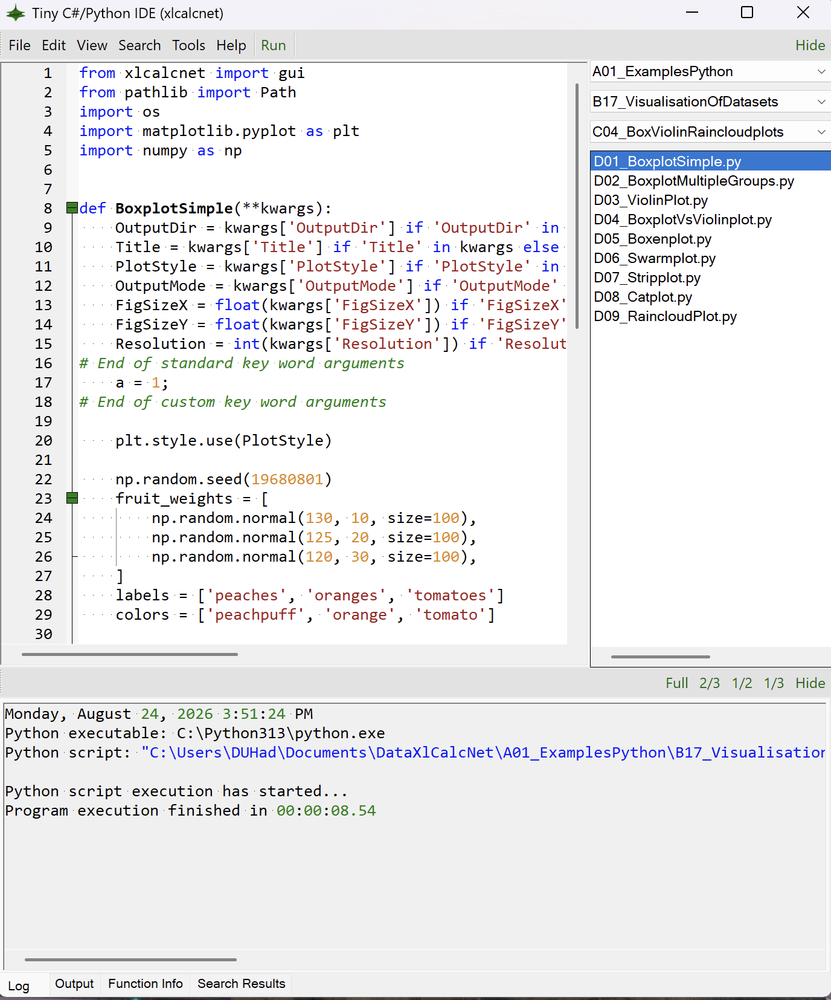
Follow these steps to make the Tiny IDE available:
In the Python installation folder, rightclick on
pythonw.exe.Select
Create shortcut-> Result:pythonw.exe-Shortcut. (On Windows 11: SelectShow more options->Create shortcut-> Result:pythonw.exe-Shortcut.)Rightclick on
pythonw.exe-shortcut; Select Properties.In the dialogue Properties, select “Target”, and type:
C:\Python313\pythonw.exe C:\Users\DUHad\Documents\DataXlCalcNet\A01_ExamplesPython\B01_GeneralUsage\C01_Setup\D03_ShowEditor.py. Here the path to the documents folder (in our caseC:\Users\DUHad\Documents) needs to be changed to meet the settings of your system. Then save.Rename
pythonw.exe-ShortcuttoTinyIDE_Python313Doubleclick on
TinyIDE_Python313In the task-bar, right-click on the appearing Python symbol, and select “Pin to taskbar”
From now on, you can start the Tiny IDE by clicking on this Python symbol on the taskbar. To start an additional instance of the Tiny IDE when the Tiny IDE is already running, click in the main menu on Tools -> Tiny IDE (external). Note that the Python source code for starting the Tiny IDE is also the Python code example which is shown after starting the Tiny IDE (in A01_ExamplesPython\B01_GeneralUsage\C01_Setup\D03_ShowEditor.py), so clicking on Run will also start an additional instance. However, now the program does not return until it is closed, as it is not running in an additional instance of Python; running the program like this is useful for debugging and testing purposes, like modifying title, width and height of the window, which can be changed on lines 67-68.
Source code#
The Python source code for starting the IDE can be found here: duhadler/XlCalcNet
The C# source code for the IDE can be found here: duhadler/XlCalcNet
Installing and using Numpy, Matplotlib, Pandas, Scipy and Seaborn#
Numpy#
Numpy is “The fundamental package for scientific computing with Python”. For more information, see https://numpy.org/ and https://en.wikipedia.org/wiki/NumPy.
To install Numpy, follow these steps:
Right-click over any free space in the C:\Python313 folder, select New -> Text Document. Rename this document to A4installnumpy.bat, ignoring the warning. Open this file for editing in the Windows standard editor. Type python -m pip install -U --no-warn-script-location numpy as install command, begin a new line, type pause, save the file, and close the editor.
Double-click on A4installnumpy.bat. This will install the latest version of Numpy.
The following example shows how Numpy can be used with the Decimal type to calculate the mean:
import numpy as np
from xlcalcnet import dpm
def demo_mp():
r = 8
c = 2
dpm.dps = 30
R = np.ndarray((r,c),dtype=dpm.realtype)
d1 = dpm.t(1.0)
for i in range(r):
for j in range(c):
R[i,j] = 10*(i+1) + d1/(j+7)
print(R)
print()
res = np.mean(R)
print("res = np.mean(R): \n", res, type(res))
print()
res = np.mean(R, axis=0)
print("res = np.mean(R, axis=0): \n", res, type(res))
print()
res = np.mean(R, axis=1)
print("res = np.mean(R, axis=1): \n", res, type(res))
def demo_all():
demo_mp()
demo_all()
The output looks like this:
[[Decimal('10.1428571428571428571428571429') Decimal('10.125')]
[Decimal('20.1428571428571428571428571429') Decimal('20.125')]
[Decimal('30.1428571428571428571428571429') Decimal('30.125')]
[Decimal('40.1428571428571428571428571429') Decimal('40.125')]
[Decimal('50.1428571428571428571428571429') Decimal('50.125')]
[Decimal('60.1428571428571428571428571429') Decimal('60.125')]
[Decimal('70.1428571428571428571428571429') Decimal('70.125')]
[Decimal('80.1428571428571428571428571429') Decimal('80.125')]]
res = np.mean(R):
45.1339285714285714285714285715 <class 'decimal.Decimal'>
res = np.mean(R, axis=0):
[Decimal('45.142857142857142857142857143') Decimal('45.125')] <class 'numpy.ndarray'>
res = np.mean(R, axis=1):
[Decimal('10.1339285714285714285714285714')
Decimal('20.1339285714285714285714285714')
Decimal('30.1339285714285714285714285714')
Decimal('40.1339285714285714285714285714')
Decimal('50.1339285714285714285714285715')
Decimal('60.1339285714285714285714285715')
Decimal('70.1339285714285714285714285715')
Decimal('80.1339285714285714285714285715')] <class 'numpy.ndarray'>
Matplotlib#
Matplotlib is “a comprehensive library for creating static, animated, and interactive visualizations in Python”. For more information, see https://matplotlib.org/ and https://en.wikipedia.org/wiki/Matplotlib.
To install Matplotlib, follow these steps:
Right-click over any free space in the C:\Python313 folder, select New -> Text Document. Rename this document to A5installmatplotlib.bat, ignoring the warning. Open this file for editing in the Windows standard editor. Type python -m pip install -U --no-warn-script-location matplotlib as install command, begin a new line, type pause, save the file, and close the editor.
Double-click on A5installmatplotlib.bat. This will install the latest version of Matplotlib.
The following example shows how Matplotlib can be used to produce a boxplot. This code example shows how parameters can be passed:
The Python code for the example below can also be found online in the DataXlCalcNet repository or in the corresponding local DataXlCalcNet folder in the file D04b_Matplotlib3D.py.
from xlcalcnet import gui
import os, re
import numpy as np
import mpl_toolkits.mplot3d.axes3d as axes3d
import matplotlib.pyplot as plt
def ProjectFilledContour(**kwargs):
OutputDir = kwargs['OutputDir'] if 'OutputDir' in kwargs else 'OutputMonitor'
Title = kwargs['Title'] if 'Title' in kwargs else 'ProjectFilledContour'
PlotStyle = kwargs['PlotStyle'] if 'PlotStyle' in kwargs else 'default'
OutputMode = kwargs['OutputMode'] if 'OutputMode' in kwargs else 'gui'
FigSizeX = float(kwargs['FigSizeX']) if 'FigSizeX' in kwargs else 4
FigSizeY = float(kwargs['FigSizeY']) if 'FigSizeY' in kwargs else 4
Resolution = int(kwargs['Resolution']) if 'Resolution' in kwargs else 300
# End of standard key word arguments
plt.style.use(PlotStyle)
fig = plt.figure()
ax = fig.add_subplot(projection='3d')
X, Y, Z = axes3d.get_test_data(0.05)
# Plot the 3D surface
ax.plot_surface(X, Y, Z, edgecolor='royalblue', lw=0.5, rstride=8, cstride=8,
alpha=0.3)
# Plot projections of the contours for each dimension. By choosing offsets
# that match the appropriate axes limits, the projected contours will sit on
# the 'walls' of the graph
ax.contourf(X, Y, Z, zdir='z', offset=-100, cmap='coolwarm')
ax.contourf(X, Y, Z, zdir='x', offset=-40, cmap='coolwarm')
ax.contourf(X, Y, Z, zdir='y', offset=40, cmap='coolwarm')
ax.set(xlim=(-40, 40), ylim=(-40, 40), zlim=(-100, 100),
xlabel='X', ylabel='Y', zlabel='Z')
fig.tight_layout()
# Start of output choices
if (OutputMode == 'gui'):
gui.plot(fig, __file__, Title)
else:
FName = 'Temp'
if OutputDir != 'Temp': FName = re.sub('[^a-zA-Z0-9]', '', Title)
LocalDir = gui.get_local_appdata_xlcalcnet()
FullPath = os.sep.join([LocalDir, OutputDir, FName])
plt.savefig(FullPath + '.' + OutputMode, bbox_inches='tight')
plt.close('all')
try:
if __name__ == '__main__':
ProjectFilledContour()
except Exception:
import traceback
print(traceback.format_exc())
This produces the following output:
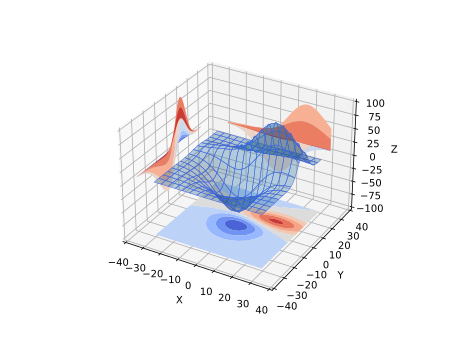
Pandas#
Pandas is “a fast, powerful, flexible and easy to use open source data analysis and manipulation tool, built on top of the Python programming language”. For more information, see https://pandas.pydata.org/ and https://en.wikipedia.org/wiki/Pandas_(software)
To install Pandas, follow these steps:
Right-click over any free space in the C:\Python313 folder, select New -> Text Document. Rename this document to A6installpandas.bat, ignoring the warning. Open this file for editing in the Windows standard editor. Type python -m pip install -U "pandas[excel] as install command, begin a new line, type pause, save the file, and close the editor.
Double-click on A6installpandas.bat. This will install the latest version of Pandas.
The following example shows how Pandas can be used to access data in an Excel workbook:
import time
import pandas as pd
def main_tests():
get_irisdata()
def get_documents_folder():
"""Returns the documents folder."""
import ctypes, ctypes.wintypes
buf = ctypes.create_unicode_buffer(ctypes.wintypes.MAX_PATH)
ctypes.windll.shell32.SHGetFolderPathW(None, 0x0005, None, 0, buf)
return str(buf.value)
def get_irisdata():
fn = get_documents_folder()
fn += r'\DataXlCalcNet\DataExamples\MainExamples\Workbooks\Datasets.xlsx'
datasets = pd.ExcelFile(fn)
df = pd.read_excel(datasets, 'iris')
print(df)
print(df.head(8))
print(df.dtypes)
try:
if __name__ == '__main__':
start0 = time.time()
main_tests()
end0 = time.time()
print('Elapsed time:', format(end0 - start0, '.4g'), 'seconds' )
except Exception:
import traceback
print(traceback.format_exc())
The output looks like this:
Sepal.Length Sepal.Width Petal.Length Petal.Width Species
0 5.1 3.5 1.4 0.2 setosa
1 4.9 3.0 1.4 0.2 setosa
2 4.7 3.2 1.3 0.2 setosa
3 4.6 3.1 1.5 0.2 setosa
4 5.0 3.6 1.4 0.2 setosa
.. ... ... ... ... ...
145 6.7 3.0 5.2 2.3 virginica
146 6.3 2.5 5.0 1.9 virginica
147 6.5 3.0 5.2 2.0 virginica
148 6.2 3.4 5.4 2.3 virginica
149 5.9 3.0 5.1 1.8 virginica
[150 rows x 5 columns]
Sepal.Length Sepal.Width Petal.Length Petal.Width Species
0 5.1 3.5 1.4 0.2 setosa
1 4.9 3.0 1.4 0.2 setosa
2 4.7 3.2 1.3 0.2 setosa
3 4.6 3.1 1.5 0.2 setosa
4 5.0 3.6 1.4 0.2 setosa
5 5.4 3.9 1.7 0.4 setosa
6 4.6 3.4 1.4 0.3 setosa
7 5.0 3.4 1.5 0.2 setosa
Sepal.Length float64
Sepal.Width float64
Petal.Length float64
Petal.Width float64
Species object
dtype: object
Elapsed time: 0.4529 seconds
Scipy#
Scipy is “a fast, powerful, flexible and easy to use open source data analysis and manipulation tool, built on top of the Python programming language”. For more information, see https://scipy.org/ and https://en.wikipedia.org/wiki/SciPy.
To install Scipy, follow these steps:
Right-click over any free space in the C:\Python313 folder, select New -> Text Document. Rename this document to A7installscipy.bat, ignoring the warning. Open this file for editing in the Windows standard editor. Type python -m pip install scipy as install command, begin a new line, type pause, save the file, and close the editor.
Double-click on A7installscipy.bat. This will install the latest version of Scipy.
The following example shows how Scipy can be used for fitting data:
import numpy as np
import matplotlib.pyplot as plt
from scipy.optimize import curve_fit
def func(x, a, b, c):
return a * np.exp(-b * x) + c
def test_curvefit():
# See https://docs.scipy.org/doc/scipy/reference/generated/scipy.optimize.curve_fit.html
print('Hello from test_curvefit!')
xdata = np.linspace(0, 4, 50)
y = func(xdata, 2.5, 1.3, 0.5)
rng = np.random.default_rng()
y_noise = 0.2 * rng.normal(size=xdata.size)
ydata = y + y_noise
plt.plot(xdata, ydata, 'b-', label='data')
popt, pcov = curve_fit(func, xdata, ydata)
print(popt)
plt.plot(xdata, func(xdata, *popt), 'r-',
label='fit: a=%5.3f, b=%5.3f, c=%5.3f' % tuple(popt))
popt, pcov = curve_fit(func, xdata, ydata, bounds=(0, [3., 1., 0.5]))
print(popt)
plt.plot(xdata, func(xdata, *popt), 'g--',
label='fit: a=%5.3f, b=%5.3f, c=%5.3f' % tuple(popt))
plt.xlabel('x')
plt.ylabel('y')
plt.legend()
plt.show()
try:
print()
test_curvefit()
except Exception:
import traceback
print(traceback.format_exc())
This produces the following output:
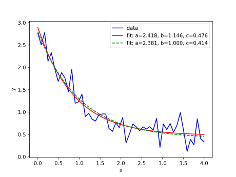
Seaborn#
Seaborn is “a Python data visualization library based on matplotlib. It provides a high-level interface for drawing attractive and informative statistical graphics”. For more information, see https://seaborn.pydata.org/.
To install Seaborn, follow these steps:
Right-click over any free space in the C:\Python313 folder, select New -> Text Document. Rename this document to A8installseaborn.bat, ignoring the warning. Open this file for editing in the Windows standard editor. Type python -m pip install seaborn as install command, begin a new line, type pause, save the file, and close the editor.
Double-click on A8installseaborn.bat. This will install the latest version of Seaborn.
The following example shows how Seaborn can be used to produce a scatterplot matrix:
from xlcalcnet import gui
from pathlib import Path
import os
import seaborn as sns
import matplotlib.pyplot as plt
# See also: https://seaborn.pydata.org/examples/scatterplot_matrix.html
def ScatterplotMatrix(**kwargs):
OutputDir = kwargs['OutputDir'] if 'OutputDir' in kwargs else 'OutputMonitor'
Title = kwargs['Title'] if 'Title' in kwargs else 'ScatterplotMatrix'
PlotStyle = kwargs['PlotStyle'] if 'PlotStyle' in kwargs else 'default'
OutputMode = kwargs['OutputMode'] if 'OutputMode' in kwargs else 'svg'
FigSizeX = float(kwargs['FigSizeX']) if 'FigSizeX' in kwargs else 4
FigSizeY = float(kwargs['FigSizeY']) if 'FigSizeY' in kwargs else 4
Resolution = int(kwargs['Resolution']) if 'Resolution' in kwargs else 300
# End of standard key word arguments
plt.style.use(PlotStyle)
sns.set_theme(style='ticks')
df = sns.load_dataset('penguins')
sns.pairplot(df, hue='species')
fig = plt.gcf()
# Start of output choices
if (OutputMode == 'plt'):
plt.show()
elif (OutputMode == 'gui'):
gui.plot(fig, __file__, Title)
else:
FName = 'Temp'
if OutputDir != 'Temp': FName = (Path(__file__).stem)
LocalDir = gui.get_local_appdata_xlcalcnet()
FullPath = os.sep.join([LocalDir, OutputDir, FName + '.' + OutputMode])
plt.savefig(FullPath, bbox_inches='tight')
if OutputDir != 'Temp': print('Graphics written to: ', FullPath)
plt.close('all')
try:
if __name__ == '__main__':
ScatterplotMatrix(OutputMode='gui')
except Exception:
import traceback
print(traceback.format_exc())
This produces the following output:
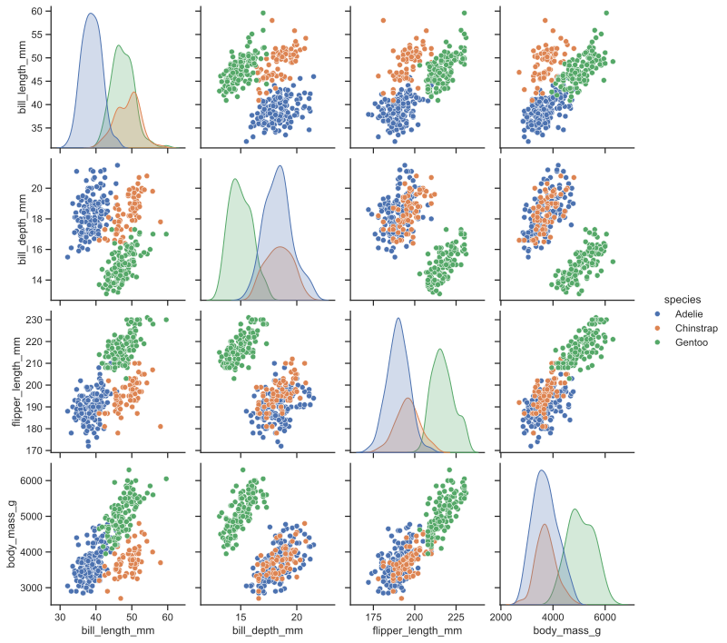
Starting and calling the socket server from C##
A running socket server is critical for the use of XlCalcNet from Microsoft Excel.
When starting the socket server for the first time from a specific installation of python.exe, a dialog will appear to allow access of this version of Python to networks. Confirm, since this is required for the socket server to work properly. If you have multiple installations of Python, you may have to do this for each installation.

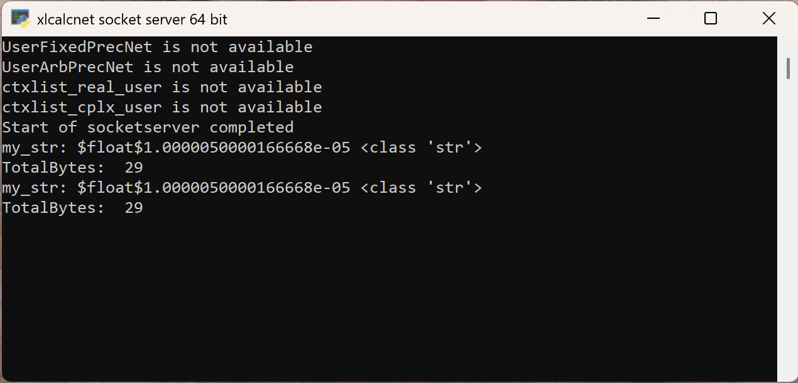
The socket server can be startet in various ways:
Starting the socketserver from the TinyIDE or GalleryOfPlots application#
In both applications, in the main menu, click on Tools -> Start SocketServer. The GalleryOfPlots application starts the socketserver automatically at startup.

Calling the socketserver from C##
The full C# source code of the example below can be found online in the DataXlCalcNet repository or in the corresponding local DataXlCalcNet folder in the file D05_CallSocketServer.cs.
The following example illustrates the use:
#region Usings
using MpFunLabClient;
using System;
using System.Diagnostics;
using System.Globalization;
using System.Threading;
using System.Numerics;
using FixedPrecNet;
#endregion
static class Program
{
public static void MainTests()
{
Console.WriteLine("Demo of call socket server");
for (int i = 0; i < 1; i++)
TestSocketServer();
}
public static void TestSocketServer()
{
Console.WriteLine("Hello TestSocketServer!");
bool Transpose = false;
bool ShowShape = true;
string Code2 = "from A01_ExamplesPython.B18_FunctionsAndCurvesPlots.C02_BasicCurves import D02_Circle;";
Code2 += "D02_Circle.CircleXY(); result = 'Done'";
dynamic ResultFinal = MpFunLabSocketClientClass.CallSocketServer0(Code2, Transpose, ShowShape);
Console.WriteLine();
Console.WriteLine("Returned:");
Console.WriteLine("{0}, {1}", ResultFinal.ToString(), ResultFinal.GetType());
try
{
int U0 = ResultFinal.GetUpperBound(0);
int U1 = ResultFinal.GetUpperBound(1);
Console.WriteLine("U0: {0}, U1: {1}", U0, U1);
for (int i = 0; i <= U0; i++)
{
for (int j = 0; j <= U1; j++)
{
Console.WriteLine("{0}, {1}", ResultFinal[i, j], ResultFinal[i, j].GetType());
}
}
}
catch (Exception)
{
}
Console.WriteLine();
}
The Python source code for the socketserver itself can be found here: duhadler/XlCalcNet
The C# source code for the socket client which is called by the above program can be found here: duhadler/XlCalcNet
Preparing MS Excel for using XlCalcNet: first steps#
Important
Before beginning to install the MS Excel addins, make sure that the socket server is up and running as expected (see the section above). When calling a function, which calls the socket server, for the first time, MS Excel will seem to freeze if the socket server does not respond quickly. However, subsequent calls will return quickly when the socket server is not up and running (there seems to be a learning effect).
Installing Mpfunlablocal.xlam and Mpfunlab.xll#
Again, make sure that the socket server is up and running.
To enable the use of XlCalcNet in MS Excel, two add-ins need to be installed: the first, named Mpfunlablocal.xlam, contains functions written in Visual Basic for Applications (VBA), including functions populating the XlCalcNet Navigator dialog, and is intended to be modified by the user during normal use. This add-in is located in a subfolder of the DataXlCalcNet folder in the Documents folder: DataXlCalcNet\SpreadsheetAddins\MSExcel.
The second, named Mpfunlab.xll, contains the functionality behind the spreadsheet functions CPY_0 - CPY_9 and ASDOUBLE and the XlCalcNet Navigator dialog container. The files comprising the whole add-in (Mpfunlab.xll, ExcelDna.Integration.dll, MpFunLabAddin64.dll, MpFunLabClient.dll, MpFunLab.Dna) have been compiled using Visual Studio and are NOT intended to be modified by the user during normal use. This add-in is located in the Bin folder in the XlCalcNet package: PathToPython\Lib\site-packages\xlcalcnet\Addin\NET48\Bin, where PathToPython is the path to the Python installation which is used to run the TinyIDE, the socketserver etc. (in our example C:\Python313).
To install these two add-ins properly, follow these steps:
Within MS Excel, on an Excel worksheet, open the Add-ins dialog from the main menu/ribbon: Developer -> Excel Add-ins. In the Add-ins dialog,
click on Browse... and in the Documents folder navigate to the folder DataXlCalcNet\SpreadsheetAddins\MSExcel. Double-click on Mpfunlablocal.xlam, which will then appear in the Add-ins dialog under “Add-ins available”. Still in the Add-ins dialog,
click on Browse... again, and navigate to the folder PathToPython\Lib\site-packages\xlcalcnet\Addin\NET48\Bin (see above). Double-click on MpFunlab.xll, which will then appear in the Add-ins dialog under “Add-ins available”. Still in the Add-ins dialog,
click on OK. Exit MS Excel.
When starting MS Excel the next time, both add-ins will be loaded.
Using the Python standard library functions within spreadsheet formulas#
Note
In the following subsections, we will work with the file LoDemoCPY_std.ods, which contains examples for using the Python standard library. More advanced examples using Numpy, Matplotlib, Pandas, Scipy, Seaborn and XlCalcNet start here.
Within MS Excel, open from the main menu File -> Open in the Documents folder the MS Excel workbook DataXlCalcNet\DataExamples\MainExamples\Workbooks\LoDemoCPY_std.ods.
This file contains several worksheets which demonstrate different possibilities of using the Python standard library within MS Excel spreadsheet formulas.
Before we start with that we will briefly explore the use of these functions with the Function Dialog of MS Excel: In the worksheet “Math”, select cell B12 and click on the icon of the Function Dialog in the Formula Bar. This opens the Function Dialog:

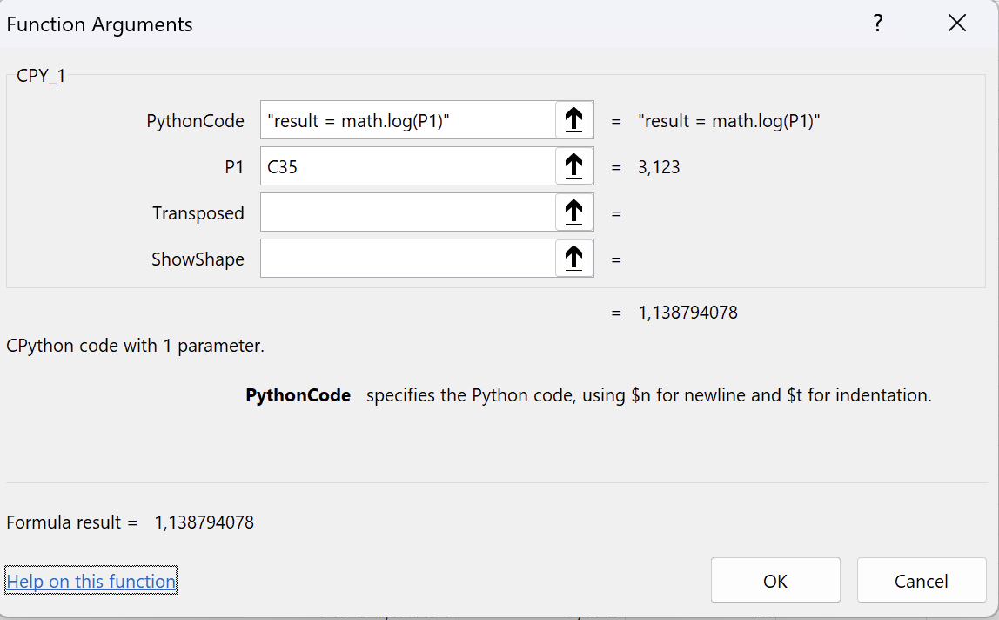
We see that the formula in the spreadsheeet cell is =CPY_1("result = math.ceil(P1)",C12). The function CPY_1 has a required string parameter, Formula, which contains a Python script. This python script can contain several Python statement. The last statement is always expected to assign a value to the variable result, in this case a Python float, which is coverted to a floating point number in double precision (a “Double”) in LibreOffice. The next optional parameter, Param1, can be a string, a Double, a Boolean value or a reference. In this case, it is a reference (C12) which points to a Double with the value 3.123. This optional parameter, Param1, is referenced in the Python formula given above as P1. The last but one parameter, Transposed, and the last parameter, ShowShape, are only relevant when arrays are returned; this is discussed here.
In the worksheet “Math”, select an emptz cell and click on the icon of the Function Dialog in the Formula Bar. This opens the Function Insert Dialog:

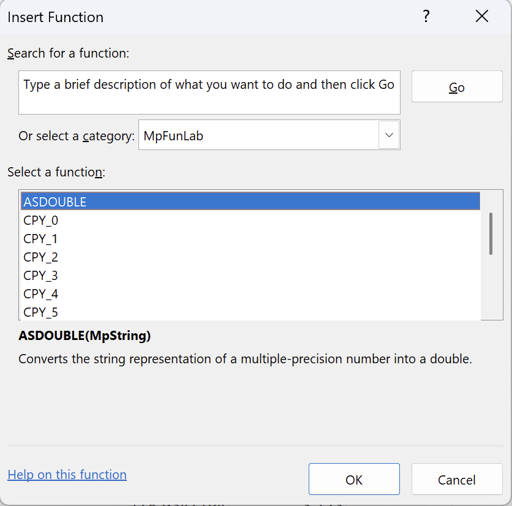
We see that the function CPY_1 is in the Category “MpFunLab”, and that there are 10 functions, CPY_0 to CPY_9, which differ only by the number of parameters Param1 to Param9 which they support (The function CPY_0 does not have a parameter Param0). There is also a function ASDOUBLE, which is used to convert string representations of a Python Fraction or Decimal into a Double; this is discussed here.
The worksheet “GeneralInfo”#
The worksheet “GeneralInfo” contains calls to the Python modules os, platform and sys.
For example, the cell B4 contains the formula =CPY_0("result = platform.processor()"). The function result depends on the hardware, e.g. Intel64 Family 6 Model 165 Stepping 5, GenuineIntel.
The cell B16 contains the formula =CPY_0("result = os.getcwd()"). The function result depends on the LibreOffice installation, e.g. C:\Program Files\LibreOffice\program.
The cell B33 contains the formula =CPY_0("result = str(sys.float_info.epsilon)"), which return the machine epsilon in double precision. The function result is: 2.220446049250313e-16.
The worksheet “Math”#
The worksheet “Math” demonstrates the use of the Python module math and the use of parameters in functions.
For example, the cell B33 contains the formula =CPY_1("result = math.exp(P1)-1",C33), which calculates \(\exp(\text{P1})-1\) naively. The function result is 1.00000500000696E-05, with the cell C33 containing the value 0.00001.
The cell B34 contains the formula =CPY_1("result = math.expm1(P1)",C34), which calculates \(\exp(\text{P1})-1\) using the expm1 function. The function result is 1.00000500001667E-05, with the cell C34 again containing the value 0.00001.
The floating point values NaN, +inf and -inf are not supported in spreadsheet programs, which only return #NUM! in these cases. Use the string representation instead. This is shown in the cells A4:B9 on this worksheet.
The cell B36 contains the formula =CPY_2("result = math.log(P1, P2)",C36, D36), with the cell C36 containing the value 3.123 and the cell D36 containing the value 10. The function result is: 0.494571984230199.
With B36 the active cell, click on the icon for the “Function Wizard”. The following dialog appears:
The worksheet “Arrays”#
The worksheet “Arrays” demonstrates the use of arrays in functions. The Python equivalent of arrays are lists.
For example, the cell B3 contains the formula =CPY_0("result = str(sys.path)"). The function sys.path returns a list of strings (containing the entries of the Python path), which is converted into one string by writing str(sys.path). This makes sure that the result can be displayed in one cell, but the result string is quite long and hard to read.
We can use an array formula to improve readability. We recall that in addition to the usual parameters P1 - P9 in the functions CPY_0 to CPY_9 there are two more: The last but one paramter, named Transposed, which is optional with default value 0, where a non-zero value means that the returned array should be transposed; and the last paramter, named ShowShape, which is optional with default value 0, where a non-zero value means that the shape of the returned array should be indicated like R7C3 for an array with 7 rows and 3 columns.
As an example, the cell B6 contains the formula =CPY_0("result = sys.path",1,1) and returns the shape information R12C1 followed by the separator |, followed by the first entry of the transposed array, i.e. in this case R12xC1| C:\Users\DUHad\Documents\DataXlCalcNet.
We can build the corresponding array formula by first selecting a range like R12C1, then typing in the input line of the formula bar =CPY_0("result = sys.path",1,0), and finally, while keeping the shift and control keys pressed down, pressing the enter key.
This is what has been done in cells B9:B20. The formula is now displayed as {=CPY_0("result = sys.path",1,0)}, with curly braces, to indicate that it is an array formula. We can change the range which is covered by the array formula by dragging the small blue rectangle in the lower right corner in the selected range (see the screenshot below).

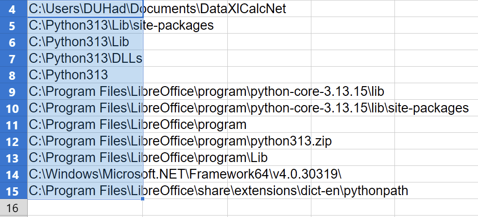
The worksheet “Data”#
The worksheet “Data “ demonstrates the use of named ranges in MS Excel spreadsheet formulas.
Currently there a two small datasets with predefined as named ranges: matA defined as the range $Data.$A$3:$A$7 and matB defined as the range $Data.$A$3:$A$7.
These ranges are used in the workbook “Arrays”.
Using Numpy, Matplotlib, Pandas, Scipy, Seaborn and XlCalcNet within spreadsheet formulas#
Note
In the following subsections. we will work with the file LoDemoCPY_adv.ods, which contains more advanced examples using Numpy, Matplotlib, Pandas, Scipy, Seaborn and XlCalcNet. Examples for using MS Excel with the Python standard library start here.
Within MS Excel, open from the main menu File -> Open in the Documents folder the MS Excel workbook DataXlCalcNet\DataExamples\MainExamples\Workbooks\LoDemoCPY_adv.ods.
This file contains several worksheets which demonstrate different possibilities of using Numpy, Matplotlib, Pandas, Scipy, Seaborn and XlCalcNet within MS Excel spreadsheet formulas.
Some of these functions write their output into the XlCalcNetIDE\OutputMonitor folder in the AppDataLocal folder. In order to see it, we need to open the Output Monitor application: start the Tiny IDE by clicking on its icon in the task bar, and in the main menu, click on Tools -> Start Output Monitor.
The worksheet “MpInput”#
The worksheet “MpInput “ demonstrates the use of named ranges in MS Excel spreadsheet formulas.
If we try to enter a number like 123456789012345678/901234567890, i.e. a number with more than 16 digits into a spreadsheet cell, it will automatically be shortened to 1.23456789012346E+029. In order to be able to enter such numbers into spreadsheet cells, the cells must first be formatted as text, and thereafter these numbers can be entered as text. This is mostly useful when working with Python Fractions and Decimals.
As an example, worksheet “MpInput” contains a named range called “MpInputFractions” in column A, which can be used as input for descriptive statistics or linear algebra routines.
However, this kind of input is hard to read; it is also not directly usable for numerical spreadsheet functions. This can be changed by using the function ASDOUBLE, a shown in column B
The worksheet “Programming”#
The worksheet “Programming” demonstrates the use of small python scripts in MS Excel spreadsheet formulas.
=CPY_0("temp = 0 $n for i in range(14): $n$t temp += i $n result = 2 * temp") is the formula in the cell B3. Here we are using $n for newline and $t for indentation; the result is 182. The corresponding Python code with conventional formatting would look like this:
temp = 0
for i in range(14):
temp += i
result = 2 * temp
=CPY_1("temp = 0 $n for i in range(int(P1)): $n$t temp += i $n result = 2 * temp", C4) is the formula in the cell B4, and the cell C4 contains the value 45; the result is 1980. The corresponding Python code with conventional formatting would look like this:
temp = 0
for i in range(int(P1)):
temp += i
result = 2 * temp
=CPY_0("from xlcalcnet import mpm $n mpm.dps=40 $n result = str(mpm.sqrt(2))") is the formula in the cell B8; the result is 1.41421356237309504880168872420969807857. The corresponding Python code with conventional formatting would look like this:
from xlcalcnet import mpm
mpm.dps=40
result = str(mpm.sqrt(2))
=CPY_0("from scipy.integrate import quad $n def integrand(x, a, b): return a*x**2 + b $n a = 2.1; b = 1.1; $n I = quad(integrand, 0, 1, args=(a,b)) $n result = str(I) ") is the formula in the cell B12; the result is the tuple (1.8000000000000003, 1.998401444325282e-14), where the first item is the value of the integral and the second item is the error estimate. The corresponding Python code with conventional formatting would look like this:
from scipy.integrate import quad
def integrand(x, a, b): return a*x**2 + b
a = 2.1; b = 1.1;
I = quad(integrand, 0, 1, args=(a,b))
result = str(I)
=CPY_0("from A06_UserlibExamplesPython.B29_InferentialStatistics.C01_BasicTests1Sample import D01_StudentT_PValues $n D01_StudentT_PValues.demo_stats_student_t_1sample_test() $n result='Done'") is the formula in the cell B17; the result is a CSV file which is written to the Output Monitor folder. The corresponding Python code with conventional formatting would look like this:
from A06_UserlibExamplesPython.B29_InferentialStatistics.C01_BasicTests1Sample import D01_StudentT_PValues
D01_StudentT_PValues.demo_stats_student_t_1sample_test()
result='Done'
And this is the Output Monitor showing the result (with the project panel hidden)

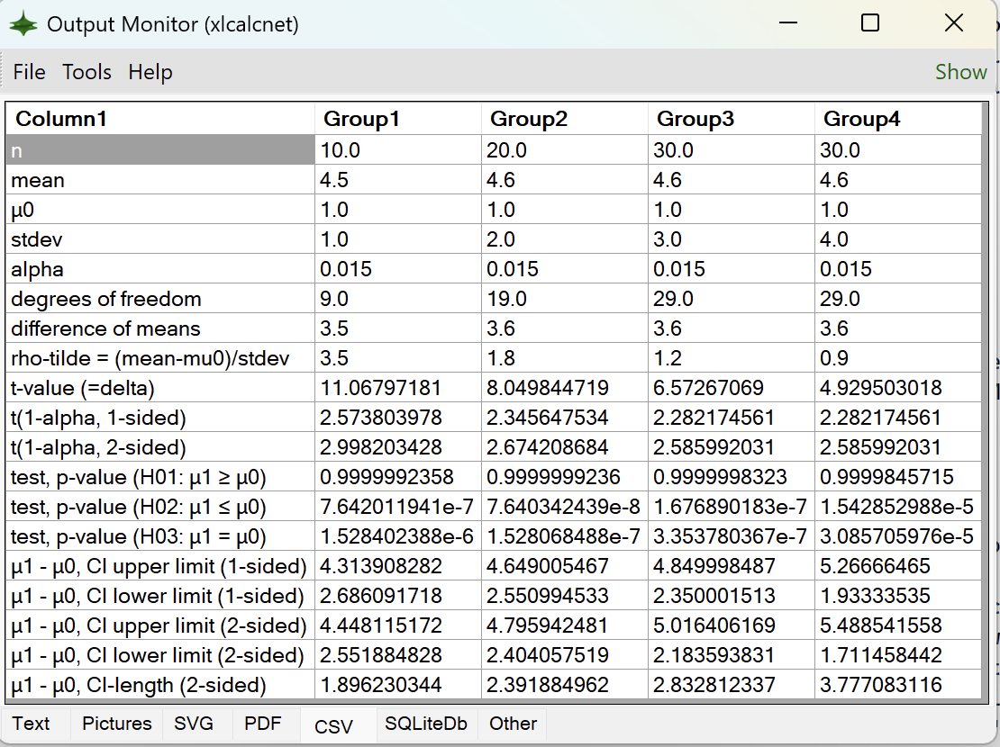
=CPY_0("from A01_ExamplesPython.B18_FunctionsAndCurvesPlots.C02_BasicCurves import D01_RegularConvexPolygon $n D01_RegularConvexPolygon.RegularConvexPolygon(OutputMode='svg') $n result='Done'") is the formula in the cell B22; the result is a SVG file which is written to the Output Monitor folder. The corresponding Python code with conventional formatting would look like this:
from A01_ExamplesPython.B18_FunctionsAndCurvesPlots.C02_BasicCurves import D01_RegularConvexPolygon
D01_RegularConvexPolygon.RegularConvexPolygon(OutputMode='svg')
result='Done'
And this is the Output Monitor showing the result (with the project panel hidden)

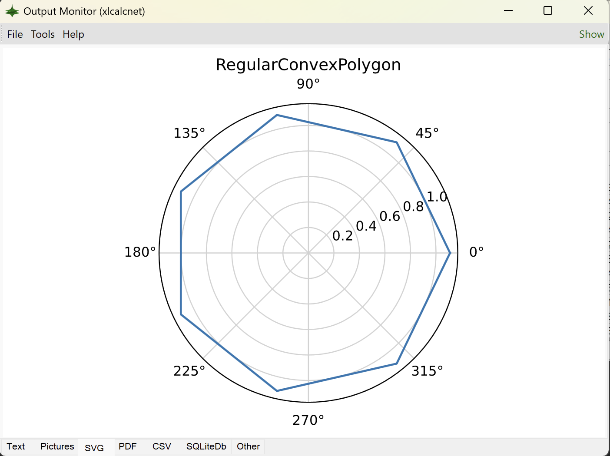
Managing procedures instead of functions#
It is possible to call the spreadsheet functions CPY_0 to CPY_9 from LibreOffice Basic and to use this to start procedures instead of functions. A few simple examples have already been prepared to demonstrate the technique.
To access the relevant dialog, click on the XlCalcNet logo (in orange) on the main menu bar:

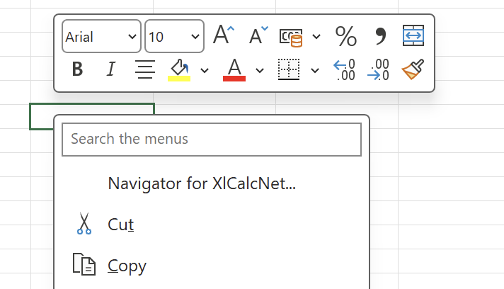
The following dialog box with the title Navigator for XlCalcNet will appear:
The first example, with CSV Output in “Category” and ShowTTest1 in “Subroutine”, will write a CSV file into the XlCalcNetIDE\OutputMonitor folder in the AppDataLocal folder. In order to see it, we need to open the Output Monitor application: start the Tiny IDE by clicking on its icon in the task bar, and in the main menu, click on Tools -> Start Output Monitor. With the Output Monitor application running, click OK. The CSV file will then immediately appear in the Output Monitor.
The corresponding code in the module MpFunlabLocal -> BasicAndDialogs is shown below:
Sub ShowTTest1()
Rem Output (a .csv file) is shown in output monitor
Code = "from A06_UserlibExamplesPython.B29_InferentialStatistics.C01_BasicTests1Sample import D01_StudentT_PValues;"
Code = Code + "D01_StudentT_PValues.demo_stats_student_t_1sample_test(); result='Done';"
Result = Application.Run("CPY_0", Code)
showResult (Result)
End Sub
The second example, with SVG Output in “Category” and ShowPolygon in “Subroutine”, will write a SVG file into the XlCalcNetIDE\OutputMonitor folder in the AppDataLocal folder. With the Output Monitor application running (see above), click OK. The SVG file will then immediately appear in the Output Monitor.
The corresponding code in the module MpFunlabLocal -> BasicAndDialogs is shown below:
Sub ShowPolygon()
Rem Graphics is shown in output monitor
Code = "from A01_ExamplesPython.B18_FunctionsAndCurvesPlots.C02_BasicCurves import D01_RegularConvexPolygon;"
Code = Code + "D01_RegularConvexPolygon.RegularConvexPolygon(OutputMode='svg'); result='Done';"
Result = Application.Run("CPY_0", Code)
showResult (Result)
End Sub
Uninstalling Mpfunlab.xlam and Mpfunlab.xll#
To uninstall these two extensions properly, follow these steps:
Within MS Excel, on an Excel worksheet, open the Add-ins dialog from the main menu/ribbon: Developer -> Excel Add-ins. In the Add-ins dialog, unselect MpFunlab and Mpfunlablocal, and click on OK. Close MS Excel. When Excel is started the next time these Add-ins will not be loaded, however, they will still appear (unselected) in the Add-ins dialog (this seems to be a decade-old bug/feature). To remove them also from the Add-ins dialog, you need to rename them in their original location, start Excel again, and start the Add-ins dialog again. When you then re-select these unselected items, a dialog stating that the add-in cannot be found will appear, followed by “Delete from list?”. Click on \(Yes\), and the add-in will be removed from the list.
Preparing LibreOffice Calc for using XlCalcNet: first steps#
To enable the use of XlCalcNet in LibreOffice Calc, two extensions need to be installed: the first, named MpfunlabLocal.oxt, contains functions and dialogs written in LibreOffice Basic and is intended to be modified by the user during normal use. The second, named Mpfunlab.oxt, contains the functionality behind the spreadsheet functions APY0 - APY9 and ASDOUBLE. It has been compiled using the SDK of LibreOfffice 7.4 and is NOT intended to be modified by the user during normal use. Both extensions are located in a subfolder of the DataXlCalcNet folder in the Documents folder: DataXlCalcNet\SpreadsheetAddins\LibreOfficeCalc.
Installing MpfunlabLocal.oxt and Mpfunlab.oxt#
To install these two extensions properly, following the correct order is important. First install MpfunlabLocal.oxt within a normally launched LibreOffice Calc (i.e. without administrator privileges): Open the Extension dialog from the main menu:Tools -> Extensions.... In the Extension dialog click the Add button and in the Documents folder navigate to the folder DataXlCalcNet\SpreadsheetAddins\LibreOfficeCalc. Double- click on MpfunlabLocal.oxt. Then click on the Close button in the Extension dialog. In the dialog Restart LibreOffice, click on Restart Now. This will close LibreOffice Calc and will open the general LibreOffice desktop. Exit LibreOffice.
Now start LibreOffice with administrator privileges: Right-click on the desktop icon of LibreOffice and select Run as administrator. In the following dialog, confirm that you want to proceed. In the LibreOffice desktop, open a Calc Spreadsheet. Open the Extension dialog from the main menu:Tools -> Extensions.... In the Extension dialog click the Add button and in the Documents folder navigate to the folder DataXlCalcNet\SpreadsheetAddins\LibreOfficeCalc. Double- click on Mpfunlab.oxt. In the following dialog box “For whom do you want to install the extension?”, click on For all users. In the following “License Agreement” dialog, click on Accept. Then click on the Close button in the Extension dialog. In the dialog Restart LibreOffice, click on Restart Now. This will close LibreOffice Calc and will open the general LibreOffice desktop. Exit LibreOffice.
Within a normally launched LibreOffice Calc, open the Macro Editor from the main menu: Tools -> Macros -> Edit Macros.... In the Object Catalog of the Macro Editor, select My Macros & Dialogs -> MpFunlabLocal -> CallsFromPython: In the function GetCPythonExeDirLocal set the path of the external Python installation which matches the main internal Python version, e.g. GetCPythonExeDirLocal ="C:\Python313". Then close the Macro Editor.
Using the Python standard library functions within spreadsheet formulas#
Note
In the following subsections, we will work with the file LoDemoAPYstd.ods, which contains examples for using the Python standard library. More advanced examples using Numpy, Matplotlib, Pandas, Scipy, Seaborn and XlCalcNet start here.
Within LibreOffice Calc, open from the main menu File -> Open in the Documents folder the LibreOffice Calc workbook DataXlCalcNet\DataExamples\MainExamples\Workbooks\LoDemoAPYstd.ods.
This file contains several worksheets which demonstrate different possibilities of using the Python standard library within Libreoffice Calc spreadsheet formulas.
Before we start with that we will briefly explore the use of these functions with the Function Wizard of LibreOffice Calc: In the worksheet “Math”, select cell B12 and click on the icon of the Function Wizard in the Formula Bar. This opens the Function Wizard with the Structure tab selected:

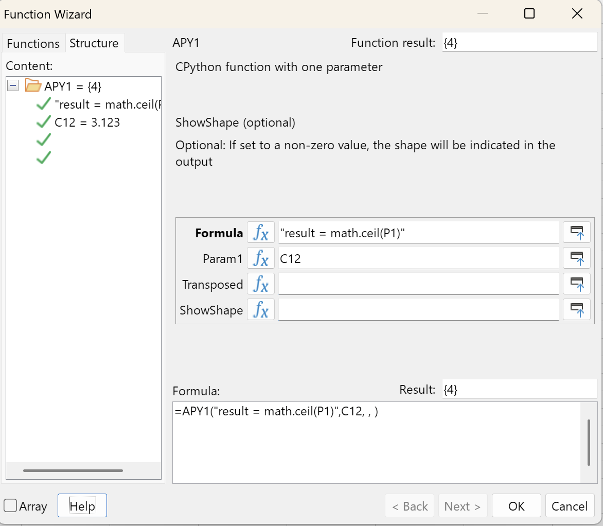
We see that the formula in the spreadsheeet cell is =APY1("result = math.ceil(P1)",C12). The function APY1 has a required string parameter, Formula, which contains a Python script. This python script can contain several Python statement. The last statement is always expected to assign a value to the variable result, in this case a Python float, which is coverted to a floating point number in double precision (a “Double”) in LibreOffice. The next optional parameter, Param1, can be a string, a Double, a Boolean value or a reference. In this case, it is a reference (C12) which points to a Double with the value 3.123. This optional parameter, Param1, is referenced in the Python formula given above as P1. The last but one parameter, Transposed, and the last parameter, ShowShape, are only relevant when arrays are returned; this is discussed here.
If we open the Functions tab, the Functions wizard looks like this:

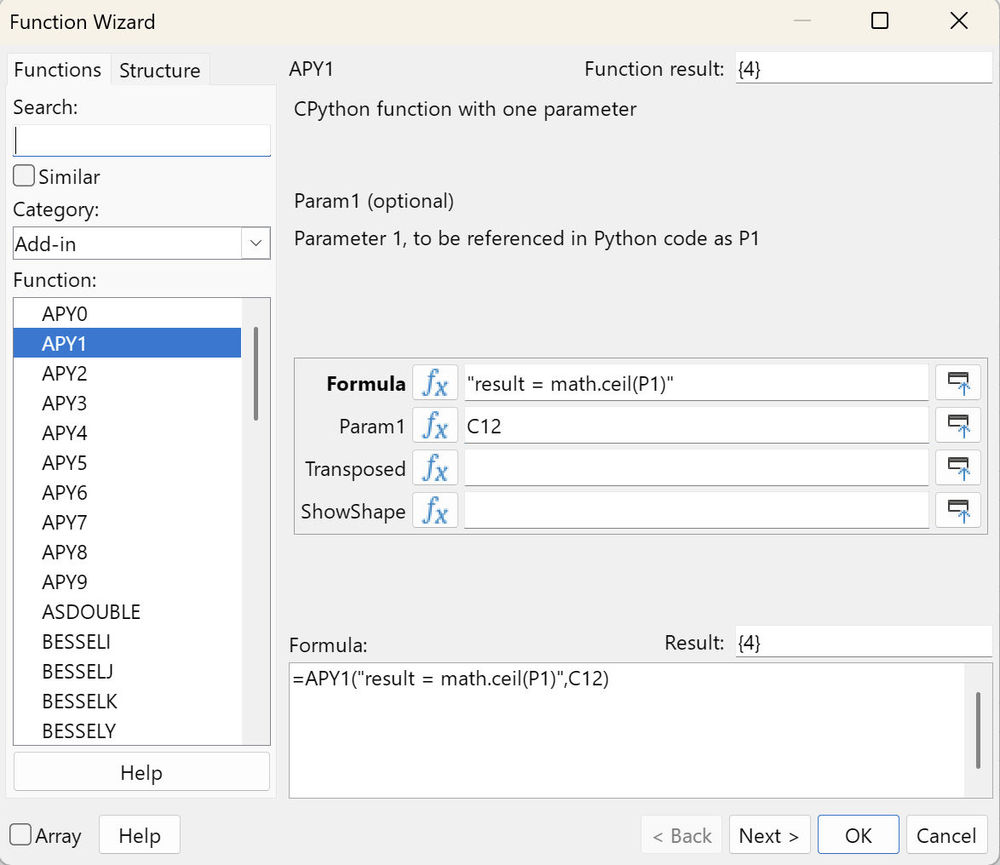
We see that the function APY1 is in the Category “Add-in”, and that there are 10 functions, APY0 to APY9, which differ only by the number of parameters Param1 to Param9 which they support (The function APY0 does not have a parameter Param0). There is also a function ASDOUBLE, which is used to convert string representations of a Python Fraction or Decimal into a Double; this is discussed here.
The worksheet “GeneralInfo”#
The worksheet “GeneralInfo” contains calls to the Python modules os, platform and sys.
For example, the cell B4 contains the formula =APY0("result = platform.processor()"). The function result depends on the hardware, e.g. Intel64 Family 6 Model 165 Stepping 5, GenuineIntel.
The cell B16 contains the formula =APY0("result = os.getcwd()"). The function result depends on the LibreOffice installation, e.g. C:\Program Files\LibreOffice\program.
The cell B33 contains the formula =APY0("result = str(sys.float_info.epsilon)"), which return the machine epsilon in double precision. The function result is: 2.220446049250313e-16.
The worksheet “Math”#
The worksheet “Math” demonstrates the use of the Python module math and the use of parameters in functions.
For example, the cell B33 contains the formula =APY1("result = math.exp(P1)-1",C33), which calculates \(\exp(\text{P1})-1\) naively. The function result is 1.00000500000696E-05, with the cell C33 containing the value 0.00001.
The cell B34 contains the formula =APY1("result = math.expm1(P1)",C34), which calculates \(\exp(\text{P1})-1\) using the expm1 function. The function result is 1.00000500001667E-05, with the cell C34 again containing the value 0.00001.
The floating point values NaN, +inf and -inf are not supported in spreadsheet programs, which only return #NUM! in these cases. Use the string representation instead. This is shown in the cells A4:B9 on this worksheet.
The cell B36 contains the formula =APY2("result = math.log(P1, P2)",C36, D36), with the cell C36 containing the value 3.123 and the cell D36 containing the value 10. The function result is: 0.494571984230199.
With B36 the active cell, click on the icon for the “Function Wizard”. The following dialog appears:

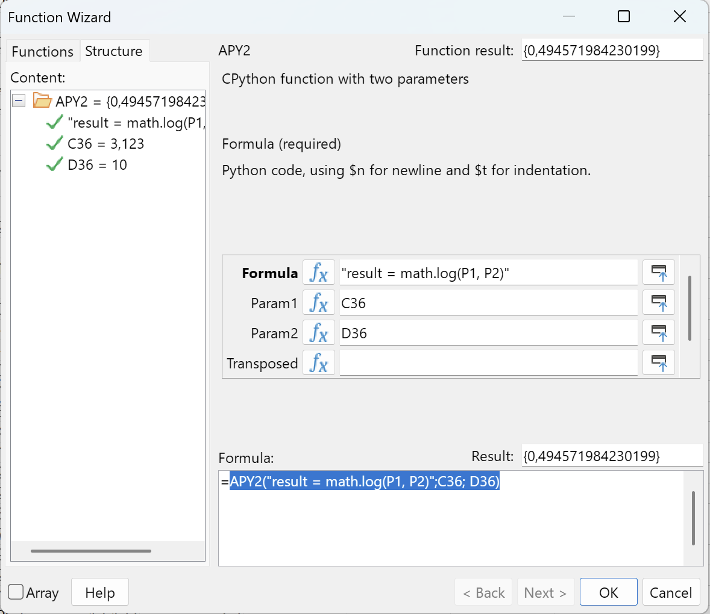
The worksheet “Arrays”#
The worksheet “Arrays” demonstrates the use of arrays in functions. The Python equivalent of arrays are lists.
For example, the cell B3 contains the formula =APY0("result = str(sys.path)"). The function sys.path returns a list of strings (containing the entries of the Python path), which is converted into one string by writing str(sys.path). This makes sure that the result can be displayed in one cell, but the result string is quite long and hard to read.
We can use an array formula to improve readability. We recall that in addition to the usual parameters P1 - P9 in the functions APY0 to APY9 there are two more: The last but one paramter, named Transposed, which is optional with default value 0, where a non-zero value means that the returned array should be transposed; and the last paramter, named ShowShape, which is optional with default value 0, where a non-zero value means that the shape of the returned array should be indicated like R7C3 for an array with 7 rows and 3 columns.
As an example, the cell B6 contains the formula =APY0("result = sys.path",1,1) and returns the shape information R12C1 followed by the separator |, followed by the first entry of the transposed array, i.e. in this case R12xC1| C:\Users\DUHad\Documents\DataXlCalcNet.
We can build the corresponding array formula by first selecting a range like R12C1, then typing in the input line of the formula bar =APY0("result = sys.path",1,0), and finally, while keeping the shift and control keys pressed down, pressing the enter key.
This is what has been done in cells B9:B20. The formula is now displayed as {=APY0("result = sys.path",1,0)}, with curly braces, to indicate that it is an array formula. We can change the range which is covered by the array formula by dragging the small blue rectangle in the lower right corner in the selected range (see the screenshot below).
The worksheet “Data”#
The worksheet “Data “ demonstrates the use of named ranges in LibreOffice Calc spreadsheet formulas.
Currently there a two small datasets with predefined as named ranges: matA defined as the range $Data.$A$3:$A$7 and matB defined as the range $Data.$A$3:$A$7.
These ranges are used in the workbook “Arrays”.
Using Numpy, Matplotlib, Pandas, Scipy, Seaborn and XlCalcNet within spreadsheet formulas#
Note
In the following subsections. we will work with the file LoDemoAPYadv.ods, which contains more advanced examples using Numpy, Matplotlib, Pandas, Scipy, Seaborn and XlCalcNet. Examples for using LibreOffice Calc with the Python standard library start here.
Within LibreOffice Calc, open from the main menu File -> Open in the Documents folder the LibreOffice Calc workbook DataXlCalcNet\DataExamples\MainExamples\Workbooks\LoDemoAPYadv.ods.
This file contains several worksheets which demonstrate different possibilities of using Numpy, Matplotlib, Pandas, Scipy, Seaborn and XlCalcNet within Libreoffice Calc spreadsheet formulas.
Some of these functions write their output into the XlCalcNetIDE\OutputMonitor folder in the AppDataLocal folder. In order to see it, we need to open the Output Monitor application: start the Tiny IDE by clicking on its icon in the task bar, and in the main menu, click on Tools -> Start Output Monitor.
The worksheet “MpInput”#
The worksheet “MpInput “ demonstrates the use of named ranges in LibreOffice Calc spreadsheet formulas.
If we try to enter a number like 123456789012345678/901234567890, i.e. a number with more than 16 digits into a spreadsheet cell, it will automatically be shortened to 1.23456789012346E+029. In order to be able to enter such numbers into spreadsheet cells, the cells must first be formatted as text, and thereafter these numbers can be entered as text. This is mostly useful when working with Python Fractions and Decimals.
As an example, worksheet “MpInput” contains a named range called “MpInputFractions” in column A, which can be used as input for descriptive statistics or linear algebra routines.
However, this kind of input is hard to read; it is also not directly usable for numerical spreadsheet functions. This can be changed by using the function ASDOUBLE, a shown in column B
The worksheet “Programming”#
The worksheet “Programming” demonstrates the use of small python scripts in LibreOffice Calc spreadsheet formulas.
=APY0("temp = 0 $n for i in range(14): $n$t temp += i $n result = 2 * temp") is the formula in the cell B3. Here we are using $n for newline and $t for indentation; the result is 182. The corresponding Python code with conventional formatting would look like this:
temp = 0
for i in range(14):
temp += i
result = 2 * temp
=APY1("temp = 0 $n for i in range(int(P1)): $n$t temp += i $n result = 2 * temp", C4) is the formula in the cell B4, and the cell C4 contains the value 45; the result is 1980. The corresponding Python code with conventional formatting would look like this:
temp = 0
for i in range(int(P1)):
temp += i
result = 2 * temp
=APY0("from xlcalcnet import mpm $n mpm.dps=40 $n result = str(mpm.sqrt(2))") is the formula in the cell B8; the result is 1.41421356237309504880168872420969807857. The corresponding Python code with conventional formatting would look like this:
from xlcalcnet import mpm
mpm.dps=40
result = str(mpm.sqrt(2))
=APY0("from scipy.integrate import quad $n def integrand(x, a, b): return a*x**2 + b $n a = 2.1; b = 1.1; $n I = quad(integrand, 0, 1, args=(a,b)) $n result = str(I) ") is the formula in the cell B12; the result is the tuple (1.8000000000000003, 1.998401444325282e-14), where the first item is the value of the integral and the second item is the error estimate. The corresponding Python code with conventional formatting would look like this:
from scipy.integrate import quad
def integrand(x, a, b): return a*x**2 + b
a = 2.1; b = 1.1;
I = quad(integrand, 0, 1, args=(a,b))
result = str(I)
=APY0("from A06_UserlibExamplesPython.B29_InferentialStatistics.C01_BasicTests1Sample import D01_StudentT_PValues $n D01_StudentT_PValues.demo_stats_student_t_1sample_test() $n result='Done'") is the formula in the cell B17; the result is a CSV file which is written to the Output Monitor folder. The corresponding Python code with conventional formatting would look like this:
from A06_UserlibExamplesPython.B29_InferentialStatistics.C01_BasicTests1Sample import D01_StudentT_PValues
D01_StudentT_PValues.demo_stats_student_t_1sample_test()
result='Done'
And this is the Output Monitor showing the result (with the project panel hidden)
=APY0("from A01_ExamplesPython.B18_FunctionsAndCurvesPlots.C02_BasicCurves import D01_RegularConvexPolygon $n D01_RegularConvexPolygon.RegularConvexPolygon(OutputMode='svg') $n result='Done'") is the formula in the cell B22; the result is a SVG file which is written to the Output Monitor folder. The corresponding Python code with conventional formatting would look like this:
from A01_ExamplesPython.B18_FunctionsAndCurvesPlots.C02_BasicCurves import D01_RegularConvexPolygon
D01_RegularConvexPolygon.RegularConvexPolygon(OutputMode='svg')
result='Done'
And this is the Output Monitor showing the result (with the project panel hidden)
Managing procedures instead of functions#
It is possible to call the spreadsheet functions APY0 to APY9 from LibreOffice Basic and to use this to start procedures instead of functions. A few simple examples have already been prepared to demonstrate the technique.
To access the relevant dialog, click on the XlCalcNet logo (in orange) on the main menu bar:

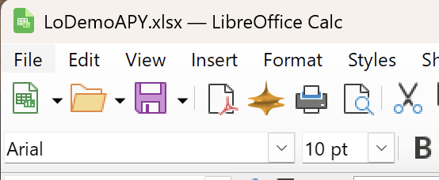
The following dialog box with the title Navigator for XlCalcNet will appear:

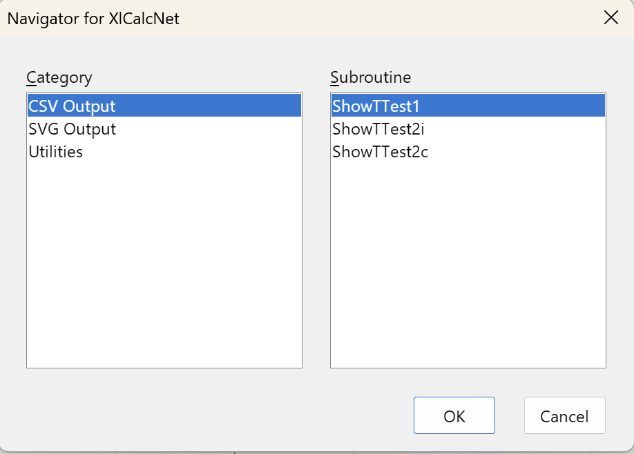
The first example, with CSV Output in “Category” and ShowTTest1 in “Subroutine”, will write a CSV file into the XlCalcNetIDE\OutputMonitor folder in the AppDataLocal folder. In order to see it, we need to open the Output Monitor application: start the Tiny IDE by clicking on its icon in the task bar, and in the main menu, click on Tools -> Start Output Monitor. With the Output Monitor application running, click OK. The CSV file will then immediately appear in the Output Monitor.
The corresponding code in the module MpFunlabLocal -> BasicAndDialogs is shown below:
Sub ShowTTest1()
REM Output (a .csv file) is shown in output monitor
fa = createUnoService("com.sun.star.sheet.FunctionAccess")
Code = "from A06_UserlibExamplesPython.B29_InferentialStatistics.C01_BasicTests1Sample import D01_StudentT_PValues;"
Code = Code + "D01_StudentT_PValues.demo_stats_student_t_1sample_test(); result='Done';"
ResultArray = fa.callFunction("APY0", Array(Code))
result = ResultArray(0)(0)
End Sub
The second example, with SVG Output in “Category” and ShowPolygon in “Subroutine”, will write a SVG file into the XlCalcNetIDE\OutputMonitor folder in the AppDataLocal folder. With the Output Monitor application running (see above), click OK. The SVG file will then immediately appear in the Output Monitor.
The corresponding code in the module MpFunlabLocal -> BasicAndDialogs is shown below:
Sub ShowPolygon()
REM Graphics is shown in output monitor
fa = createUnoService("com.sun.star.sheet.FunctionAccess")
Code = "from A01_ExamplesPython.B18_FunctionsAndCurvesPlots.C02_BasicCurves import D01_RegularConvexPolygon;"
Code = Code + "D01_RegularConvexPolygon.RegularConvexPolygon(OutputMode='svg'); result='Done';"
ResultArray = fa.callFunction("APY0", Array(Code))
result = ResultArray(0)(0)
End Sub
Exporting changes in MpfunlabLocal to MpfunlabLocal.oxt#
Changes which are made in the MpfunlabLocal library are stored in the script folders of LibreOffice and are not automatically saved to MpfunlabLocal.oxt. However, they can be exported to MpfunlabLocal.oxt, so that they are available for installation (re-installation at the current LibreOffice installation or new installation for another LibreOffice installation).
To export the MpfunlabLocal library to MpfunlabLocal.oxt, follow these steps:
open the Macro Editor from the main menu of LibreOffice Calc: Tools -> Macros -> Edit Macros.... In the main menu of the Macro Editor, select Dialogs -> Organize Dialogs. In the dialog “Basic Macro Organizer” select the tab “Libraries”. “Location” should be set to “My Macros & Dialogs” and “Library: Name” should be “MpFunlabLocal”. Click on Export.... In the following dialog box select “Export as extension”, and click on OK. In the dialog “Export library as extension” navigate to the documents folder, and within this folder to DataXlCalcNet\SpreadsheetAddins\LibreOfficeCalc. Select MpfunlabLocal.oxt and click on Save. Confirm to replace. In the dialog “Basic Macro Organizer” click on Close. Then close the Macro Editor.
Uninstalling MpfunlabLocal.oxt and Mpfunlab.oxt#
To uninstall these two extensions properly, following the correct order is important.
First start LibreOffice with administrator privileges: Right-click on the desktop icon of LibreOffice and select Run as administrator. In the following dialog, confirm that you want to proceed. In the LibreOffice desktop, open a Calc Spreadsheet. Open the Extension dialog from the main menu:Tools -> Extensions.... In the Extension dialog select MpFunlab.oxt, click the Remove button and click on OK in the confirmation dialog. Then click on the Close button in the Extension dialog. In the dialog Restart LibreOffice, click on Restart Now. This will close LibreOffice Calc and will open the general LibreOffice desktop. Exit LibreOffice.
Now uninstall MpfunlabLocal.oxt within a normally launched LibreOffice Calc (i.e. without administrator privileges): Open the Extension dialog from the main menu: Tools -> Extensions.... In the Extension dialog select MpfunlabLocal.oxt, click the Remove button and click on OK in the confirmation dialog. Then click on the Close button in the Extension dialog. In the dialog Restart LibreOffice, click on Restart Now. This will close LibreOffice Calc and will open the general LibreOffice desktop. Exit LibreOffice.
Reasons for using multiprecision arithmetic#
An introduction to the problems of rounding errors and catastrophic cancellation can be found in Goldberg [351]. Excellent reference texts are Higham [370] and Higham [371].
In the following sections we will give a few examples of how the use of double precision without special precaution can give wrong results.
Example: Sums
Sums are often calculated exactly if all summands have an exact representation. If this is not the case, results can be unpredictable. In MS Excel, the formula
=SUM(10000000000,-16000000000,6000000000)
will give the correct result \(0\), but the analogous formula
=SUM(1E+40,-1.6E+40,6E+39)
returns \(1.20893E+24\) instead of the correct result \(0\).
Example: Standard Deviation
Like sums, variances and standard deviations are often calculated exactly if all arguments have an exact representation. If this is not the case, results can again be unpredictable. In MS Excel, the formula
=VAR(1E+30,1E+30,1E+30)
returns \(2.97106E+28\) instead of the correct result \(0\), which should be the obvious results since all arguments are the same.
Example: Overflow and underflow
In many situations where the final result is representable in double precision, some of the interim results cause overflow or underflow. A popular example is the function \(f(x,y) = \sqrt{x^2+y^2}\). With \(x=3 \cdot 10^{300}\) and \(y=4 \cdot 10^{300}\) the result \(f(x,y) = 5 \cdot 10^{300}\) is representable in double precision, but the (naive) calculation will overflow.
Example: Polynomials
Consider the following example from Cuyt et al. [190]:
For \(a=77617\) and \(b=33096\), calculate
The correct result is \(Y = -54767 / 66192 = -8.27396\ldots \cdot 10^{-1}\)
Example: Trigonometric Functions
Trigonometric functions are sensitive to small perturbations.
In double precision and binary floating point arithmetic, the tangent of \(x = 1.57079632679489\) is calculated as \(\tan(x) = 1.48752 \cdot 10^{14}\), whereas the correct result is \(\tan(x) = 1.51075 \cdot 10^{14}\). This amounts to an absolute error of \(2.32287 \cdot 10^{12}\) and a relative error of \(1.54\%\).
There are also limits on the range of arguments, e.g. \(\sin(10^{8})\) returns the value \(-9.31639 \cdot 10^{-1}\) (with an relative error of \(-6.22776 \cdot 10^{-13}\)), whereas \(\sin(10^{9})\) returns an invalid result (the exact result is \(5.45843 \cdot 10^{-1}\))
Example: Logarithms and Exponential Functions
Consider the following example from Kaveh R. Ghazi and Vincent Lefèvre and Philippe Théveny and Paul Zimmermann [1504]:
Determine 10 decimal digits of the constant
The expected result is \(Y = -1.341818958 \cdot 10^{-12}\).
Example: Linear Algebra
The following example is from W. Hofschuster and W. Krämer [1505]:
We want to solve the (ill-conditioned) system of linear equations \(Ax = b\) with
The correct solution is \(x_1 = 205117922\), \(x_2 = 83739041\).
To solve this \(2 \times 2\) system numerically we first use the well known formulas
Calculating this directly in double precision gives the following wrong result:
\(x_1 = 102558961\), \(x_2 = 41869520.5\)
Example: Eigenvalues
The following example is from Brown et al. [161]:
The behaviour and stability of many physical systems are connected with the spectral properties of non-self-adjoint operators. However, numerical approximations of eigenvalues of non-selfadjoint operators (even matrices) may fail dramatically. For example, the non-normal 7 \(\times\) 7 matrix
has the eigenvalues \(-2, -4, 0, 1, 1, 2, 4\). Calculations in double precision yield a set of complex eigenvalues, such as \(8.57 \pm 3.73 i; 2.29 \pm 8.33 i; -5.43 \pm 6.56 i; -8.85\) with imaginary parts as large as \(8.33\), which are nowhere near the true eigenvalues. The reason for this is that owing to the nonnormality of the matrix, its eigenvalues are highly sensitive to perturbations, and therefore unavoidable rounding errors render the numerical eigenvalue computations unreliable.
Reasons for calling C# from Python#
Speed: Give some comparative data
Access to the full .Net Framework runtime: Gui applications as examples
Availability: It is available anyway, as a component of Windows.
Rebuilding the .dll files of XlCalcNet and XlCalcNet2 from source code#
The XlCalcNet and XlCalcNet2 python packages contain both precompiled .dll files and their source code.
This section descibes how to rebuild the .dll files of XlCalcNet and XlCalcNet2 from source code, either completely or only in part. The building process itself is not particularly difficult, but it requires the installation of MSYS2 (version 3.4.9.x86_64 or later: about 4 GB in size), Free Pascal (version 2.6.4 or later: about 320 MB in size), and Visual Studio Community (version 2019 or later: about 4.6 GB in size).
In the following it is assumed that the user has installed MSYS2, Free Pascal and Visual Studio Community and is comfortable using them.
MSYS2 is required to build the file FixedPrecGCC64K8.dll in the XlCalcNet Bin folder. The details of the building process are described in FixedPrec.
MSYS2 is also required to build the file ArbPrecNetGCCK8.dll in the XlCalcNet2 Bin folder. The details of the building process are described in ArbPrec.
Free Pascal is required to build the file libwe64d.dll in the XlCalcNet Bin folder. The details of the building process are described in FixedPrec.
Erverything else can be done in Visual Studio Community:
The details of building the file FixedPrecNet.dll in the XlCalcNet Bin folder are described in FixedPrec.
The details of building the file ArbPrecNet.dll in the XlCalcNet2 Bin folder are described in ArbPrec.
The details of building the files MpFunLabClient.dll and MpFunLabAddin64.dll in the XlCalcNet Bin folder are described in ClientServer.
The details of building the file TinyOutputMonitorUserCtrl.dll in the XlCalcNet Bin folder are described in OutputMonitor.
The details of building the file TinyIDEUserCtrl.dll and FindReplaceSD.dll in the XlCalcNet Bin folder are described in TinyIde.
The details of building the file TinyPlot2DUserCtrl.dll in the XlCalcNet Bin folder are described in GalleryOfPlots.
The details of building the file TinyPlot3DUserCtrl.dll in the XlCalcNet Bin folder are described in Wpf3D.
The details of building the file TinyDataViewerUserCtrl.dll in the XlCalcNet Bin folder are described in DataViewer.
All other .dll files in the XlCalcNet Bin folder have been aquired via https://www.nuget.org/ from the supporting libraries and should probably not be changed.